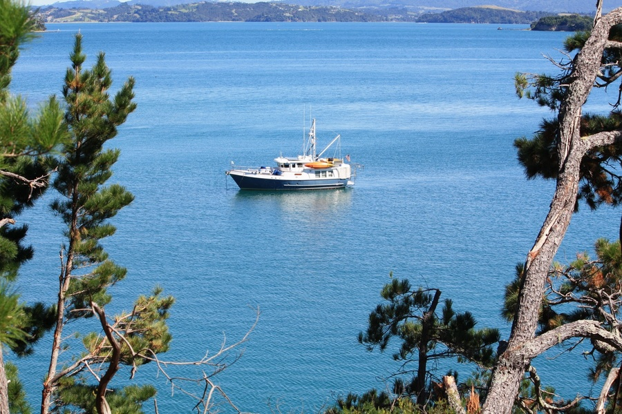

27 декабря 2022 г.
Кругосветка на серийной моторной яхте из стеклопластика: опыт владельцев
Единственные серийные моторки, которые постоянно ходят в кругосветки — это яхты Nordhavn. Мы изучили опыт их владельцев
С 1980-х годов десяток яхт Nordhavn обошли вокруг света. Некоторые — не один раз. Это уникальный опыт, ни один другой яхтенный бренд не может похвастаться тем же.
Владельцы Nordhavn путешествовали вокруг света, самостоятельно управляя своими совсем небольшими стеклопластиковыми лодками. Большинство из этих лодок были длиной 46 футов (14 метров). В этой статье мы собрали их опыт, который может быть полезен всем, кто тоже мечтает о кругосветке, но хочет пройти ее в более комфортных условиях, чем может предложить парусник.
Как родилась идея серийной моторки для кругосветки
Компания Pacific Asian Enterprises (PAE) изначально строила парусники под маркой Mason. Это были bluewater-круизеры для океанских переходов. Парусники Mason неоднократно совершали кругосветки: например, один из корпусов Mason 44 обошел вокруг света трижды, а Mason 53 — пять раз.
В конце 80-х рынок парусных яхт начал приходить в упадок, поэтому руководство стало задумываться об импорте моторных лодок, рассматривая дилерские отношения с разными верфями.
К счастью, Джефф Лейшман, младший брат основателя компании Джима Лейшмана, к тому времени уже имел достаточный опыт в проектировании судов. Владельцы решили рискнуть, и в 1988 году доверили Джеффу разработку моторной яхты.
Получился проект 46-футового стеклопластикового судна, внешне напоминающего рыболовные траулеры Северного моря. Новый бренд экспедиционных моторных яхт назвали Nordhavn – «Северная гавань».
Nordhavn 46 вначале приняли настороженно. Яхтенный рынок посчитал его «странным», «смешным» и «необычным». В результате за постройку лодки взялась только молодая компания South Coast Marine из Тайва
ня.В начале 1989 года был построен и отправлен заказчику корпус №1, а спустя год еще десять яхт нового бренда нашли